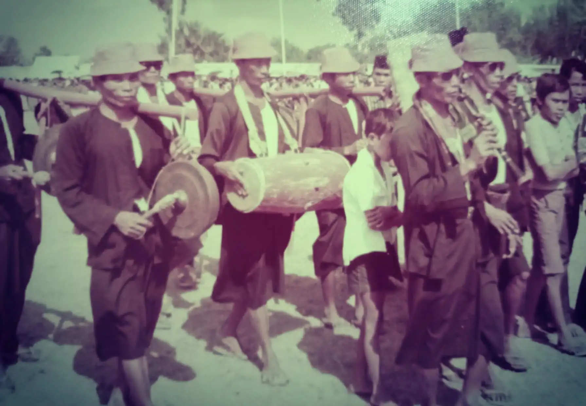
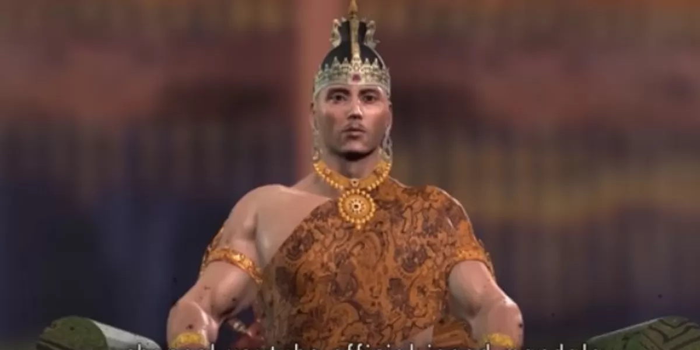
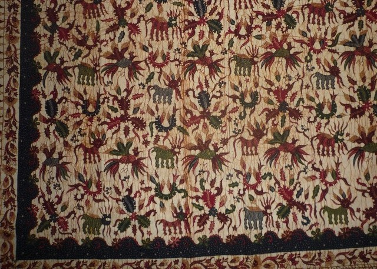
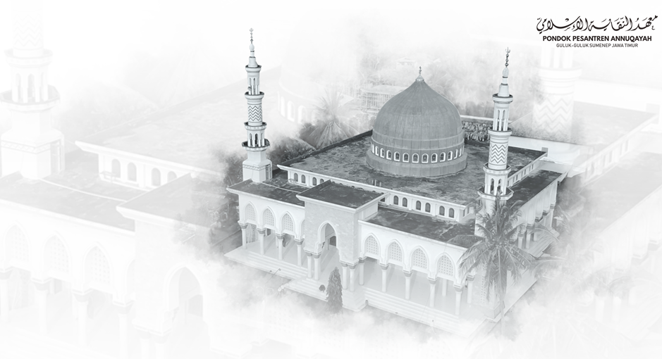

Berbagai fragmen sejarah penting yang membentuk identitas Madura saat ini.

HiburanMusik Saronen merupakan kesenian musik tiup tradisional khas Madura yang memiliki akar sejarah kuat sebagai media dakwah Islam yang dikembangkan oleh Kyai Khatib Sendang (cucu Sunan Kudus).
Selengkapnya
PahlawanKisah kepemimpinan Arya Wiraraja yang menjadi tonggak penting hubungan antara Madura dan berdirinya Kerajaan Majapahit.
Selengkapnya
Tradisi KunoPerjalanan motif batik pesisiran yang berani, mencerminkan karakter orang Madura yang jujur, tegas, dan penuh semangat.
Selengkapnya
ReligiusMasuknya pengaruh Islam dan berdirinya pondok pesantren tua yang menjadi pusat pendidikan dan budaya di Pulau Madura.
Selengkapnya